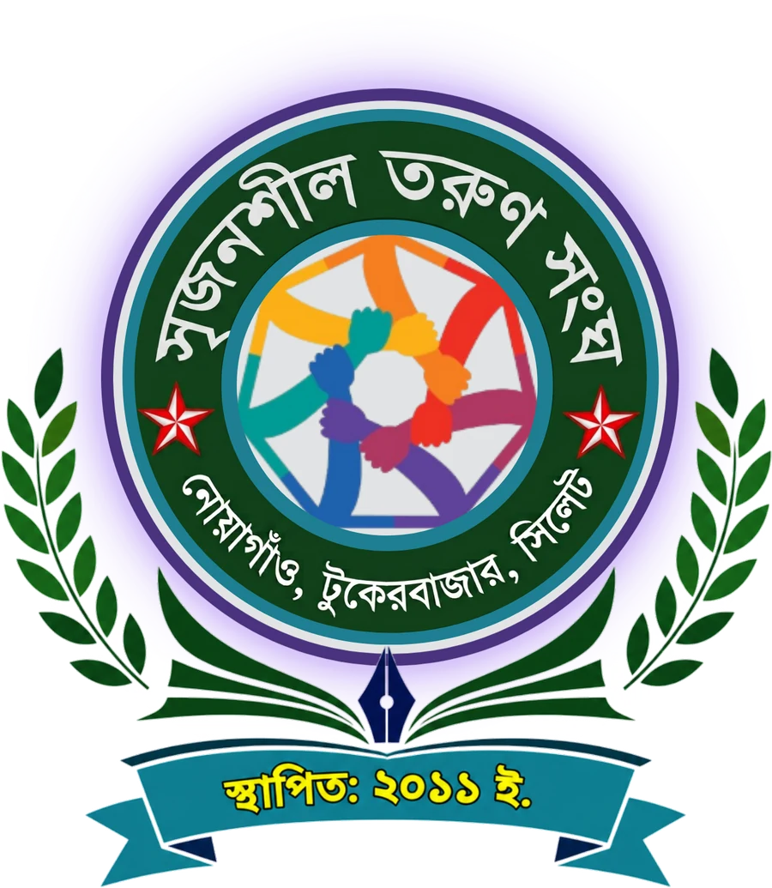
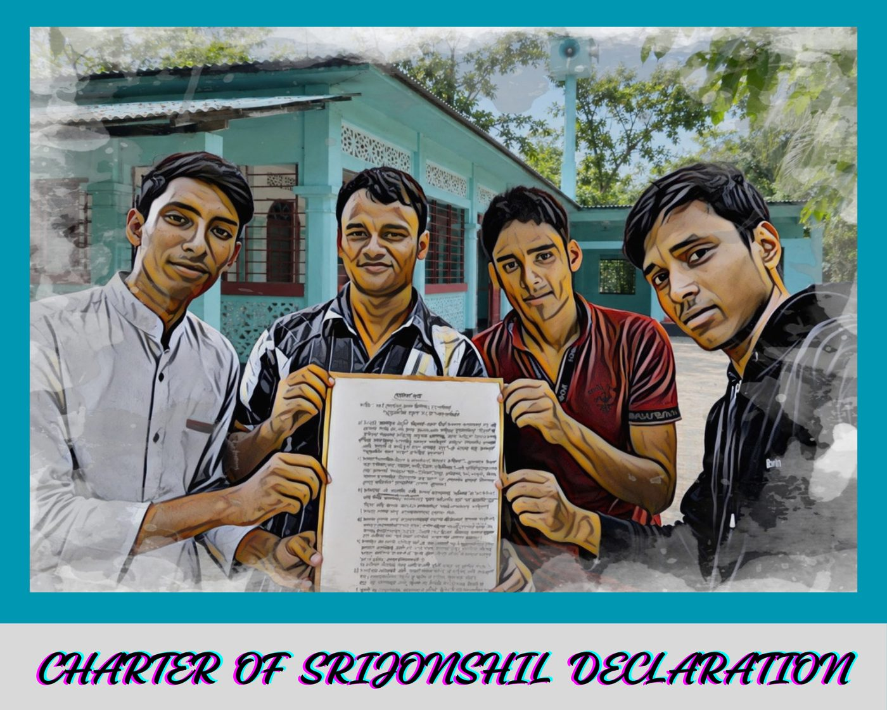

সৃজনশীল তরুণ সংঘ
সামাজিক উন্নয়ন ও ন্যায়বিচার,
তারুণ্যের অঙ্গীকার
শিক্ষা, স্বাস্থ্য, পরিবেশ, সংস্কৃতি, ক্রীড়া ও সচেতনতার মাধ্যমে সামাজিক ও মানবিক সমস্যার সমাধানে তরুণদের সম্মিলিত উদ্যোগ।
সামাজিক সংগঠনের প্রয়োজনীয়তা
একটি সুস্থ, মানবিক ও সুশৃঙ্খল সমাজ গঠনে এবং অসহায় মানুষের পাশে দাঁড়াতে সমাজকল্যাণ বা সামাজিক সংগঠন অত্যন্ত জরুরি। একা একজন মানুষের পক্ষে সব সময় বড় কোনো পরিবর্তন আনা সম্ভব নয়, কিন্তু সম্মিলিত প্রচেষ্টায় যেকোনো সংকট মোকাবিলা করা সহজ হয়। আমরা ’সৃজনশীল তরুণ সংঘ’ গঠনের অনুপ্রেরণা পেয়েছি হিলফুল ফুজুল থেকে।
আমাদের সম্পর্কে
‘সৃজনশীল তরুণ সংঘ’ নোয়াগাঁও গ্রাম ভিত্তিক একটি স্বেচ্ছাসেবী ও সামাজিক সংগঠন। শিক্ষা, সামাজিক উন্নয়ন, মানবিক সহায়তা, রক্তদান, সাংস্কৃতিক কর্মকাণ্ড এবং তরুণদের দক্ষতা বিকাশে উদ্বুদ্ধ করার লক্ষ্যে এটি বিভিন্ন কার্যক্রম পরিচালনা করে।
- প্রতিষ্ঠাকাল
- ১৫ই সেপ্টেম্বর ২০১১, বৃহস্পতিবার
- ইতিহাস
- সামাজিক দায়বদ্ধতা ও তরুণদের সৃজনশীল কর্মকাণ্ডে সম্পৃক্ত করার উদ্দেশ্যে চার স্বপ্নবাজ কিশোরের উদ্যোগে ২০১১ সালের ১৫ই সেপ্টেম্বর সৃজনশীল তরুণ সংঘ প্রতিষ্ঠিত হয়। এই চার কিশোর হলেন মোজাহিদ আহমদ, তোফায়েল আহমদ, মোঃ জুনেদ আহমদ ও মোঃ শাহনুর হুসাইন। প্রধান উদ্যোক্তা এবং ঘোষণাপত্র স্বাক্ষরকারী (১৫ই সেপ্টেম্বর, ২০১১) হিসেবে এই চারজন স্থায়ী কমিটির সদস্য ও আজীবন সদস্য। বিস্তারিত
- স্লোগান
- সামাজিক উন্নয়ন ও ন্যায়বিচার, তারুণ্যের অঙ্গীকার।
(Social Development and Justice, A commitment of Youth.) - লক্ষ্য ও উদ্দেশ্য
- সর্বস্তরের মানুষকে একতাবদ্ধ করার মাধ্যমে ন্যায় ও সততা প্রতিষ্ঠা করে সকল প্রকার সামাজিক সমস্যা সমাধানের মাধ্যমে নোয়াগাঁও গ্রামকে একটি আদর্শ ও শান্তিপূর্ণ গ্রামে রূপান্তর করা। সংগঠনটির প্রধান উদ্দেশ্যসমূহ হলো: বিস্তারিত
- মূলনীতি
- সৃজনশীল তরুণ সংঘ ছয়টি মূলনীতিকে অনুসরণ করে সমাজকল্যাণমূলক কার্যক্রম পরিচালনা করে। মূলনীতিগুলো হলো- শিক্ষা, ঐক্য, ন্যায্যতা, শান্তি, উন্নয়ন, সৃষ্টিশীলতা।
- সদর দপ্তর/কার্যালয়
- নয়াবাজার, নোয়াগাঁও, টুকেরবাজার, ৩৯নং ওয়ার্ড, সিলেট সিটি কর্পোরেশন, জালালাবাদ, সিলেট, বাংলাদেশ।
আমাদের কার্যক্রম
সৃজনশীল তরুণ সংঘ বিভিন্ন সময়ে নিম্নোক্ত কার্যক্রম পরিচালনা করে থাকে:
কর্মসূচি
সৃজনশীল তরুণ সংঘ এর ৮ টি কর্মসূচি: শিক্ষা, স্বাস্থ্য, পরিবেশ, ধর্ম, সংস্কৃতি, ক্রিড়া, সচেতনতা ও সামাজিক উন্নয়নমূলক কাজ।
সাংগঠনিক কাঠামো
সংগঠনটি একটি নির্বাহী/কার্যকরী কমিটির মাধ্যমে পরিচালিত হয়।
- কার্যকরী কমিটি — সংগঠনের দৈনন্দিন কার্যক্রম পরিচালনা ও সিদ্ধান্ত বাস্তবায়ন করবে। বর্তমান কার্যকরী কমিটি
- স্থায়ী কমিটি — নির্দিষ্ট বিষয় বা দায়িত্ব নিয়ে ধারাবাহিকভাবে কাজ করবে। বর্তমান স্থায়ী কমিটি
- উপদেষ্টা কমিটি — পরামর্শ, দিকনির্দেশনা ও অভিজ্ঞতাভিত্তিক সহায়তা দেবে। বর্তমান উপদেষ্টা কমিটি
- সাধারণ পরিষদ — সংগঠনের বৃহত্তর সদস্যসমষ্টি; গুরুত্বপূর্ণ নীতিগত বিষয় অনুমোদন ও তদারকিতে ভূমিকা রাখবে।
সদস্য তালিকা
সৃজনশীল তরুণ সংঘ এর প্রতিষ্ঠাকালীন সময় থেকে বর্তমান সময় পর্যন্ত সকল শ্রেণির সকল সদস্যের তালিকা:
- সাধারণ সদস্য: সাধারণ সদস্য তালিকা দেখুন এখানে
- প্রবাসী সদস্য: প্রবাসী সদস্য তালিকা দেখুন এখানে
- দাতা সদস্য: দাতা সদস্য তালিকা দেখুন এখানে
- জুনিয়র সদস্য: জুনিয়র সদস্য তালিকা দেখুন এখানে
ইউনিট
আমাদের কার্যক্রমকে সফল-সার্থক করার জন্য প্রয়োজন অনুযায়ী বিভিন্ন ইউনিট গঠন করা হয়, যাতে স্বেচ্ছাসেবীরা সহজে কাজ করতে পারে।
পাঠাগার
পাঠাগার প্রতিষ্ঠার প্রধান উদ্দেশ্য: জ্ঞানার্জনের সুযোগ সৃষ্টি করা— বই, পত্রিকা, সাময়িকী ও অন্যান্য জ্ঞানমূলক উপকরণ সহজলভ্য করা।
পাঠাগারের দুটি শাখা রয়েছে।
- ইসলামিক শাখা: নোয়াগাঁও কেন্দ্রীয় জামে মসজিদ
- সাধারণ শাখা: সংগঠনের কার্যালয়।
বইয়ের তালিকা: বিস্তারিত
ইভেন্ট
আমাদের আয়োজন, উদ্যোগ, সভা, সমাবেশ, র্যালি, অনুষ্ঠান ইত্যাদি।
নোটিশ
সংগঠনের গুরুত্বপূর্ণ ঘোষণা, নির্দেশনা, সময়সূচি, সভা, অনুষ্ঠান, কার্যক্রম এবং অন্যান্য প্রয়োজনীয় তথ্য সদস্য, স্বেচ্ছাসেবক ও সংশ্লিষ্টদের জানাতে নোটিশ প্রকাশ করা হয়।
সংবাদ
সংগঠনের সম্পন্ন হওয়া কার্যক্রম, অর্জন, উদ্যোগ ও গুরুত্বপূর্ণ ঘটনাবলি সাধারণ মানুষ, সদস্য ও শুভাকাঙ্ক্ষীদের কাছে তুলে ধরার জন্য সংবাদ প্রকাশ করা হয়।
সদস্য আবেদন
অংশগ্রহণ থেকে পরিবর্তনের পথে
একটি সংগঠনের শক্তি শুধু তার নিয়ম-কাঠামো বা কার্যক্রমে নয়; বরং তার সবচেয়ে বড় শক্তি হলো তার সদস্যরা। একজন সদস্য হওয়া মানে শুধু একটি তালিকায় নিজের নাম যুক্ত করা নয়—এটি একটি মূল্যবোধ, দায়িত্ব ও ইতিবাচক পরিবর্তনের সঙ্গে নিজেকে যুক্ত
প্রাক্তন সভাপতি
একজন সভাপতির দায়িত্ব শুধু একটি পদ অলংকরণ নয়; বরং সংগঠনের পথচলায় নেতৃত্ব দেওয়া, সদস্যদের ঐক্যবদ্ধ রাখা এবং প্রতিকূল সময়ে সাহস ও প্রজ্ঞার সঙ্গে সিদ্ধান্ত নেওয়া। আমাদের প্রাক্তন সভাপতিগণ তাঁদের দায়িত্ব পালনের মাধ্যমে
সহযোগিতা করুন
প্রতিবেদন
প্রকাশনা
আমাদের কার্যক্রম, অর্জন, অভিজ্ঞতা ও বিভিন্ন সামাজিক উদ্যোগ সম্পর্কে সদস্য, শুভাকাঙ্ক্ষী ও সাধারণ মানুষের কাছে তথ্য পৌঁছে দিতে নিয়মিত বিভিন্ন প্রকাশনা প্রকাশ করা হয়
স্বচ্ছতা ও জবাবদিহিতা
একটি সংগঠনের প্রতি মানুষের আস্থা ও বিশ্বাসের সবচেয়ে গুরুত্বপূর্ণ ভিত্তিগুলোর মধ্যে রয়েছে স্বচ্ছতা ও জবাবদিহিতা। স্বচ্ছতা মানে হলো— সংগঠনের কার্যক্রম, সিদ্ধান্ত ও অর্থনৈতিক বিষয়গুলো সদস্যদের কাছে পরিষ্কার ও বোধগম্য রাখা। আর জবাবদিহিতা হলো—
সাধারণ জিজ্ঞাসা
সংগঠন সম্পর্কে আগ্রহী সদস্য, শুভাকাঙ্ক্ষী ও সহযোগীদের সাধারণ প্রশ্নের উত্তর এক জায়গায় তুলে ধরা হলো।
সদস্য/স্বেচ্ছাসেবীদের গল্প
একটি সংগঠনের সবচেয়ে বড় শক্তি তার সদস্যরা। তাঁদের সময়, শ্রম, ভালোবাসা ও দায়িত্ববোধের সম্মিলিত প্রচেষ্টাতেই ছোট ছোট উদ্যোগ হয়ে ওঠে বড় পরিবর্তনের গল্প। তাঁদের গল্প নিয়েই আমাদের এই বিভাগ।
আমাদের অর্জন
আমাদের প্রতিটি অর্জনের পেছনে রয়েছে অসংখ্য মানুষের সময়, শ্রম, ভালোবাসা ও আন্তরিক সহযোগিতা। তাই আমাদের অর্জন শুধু কিছু সংখ্যা বা সফল কার্যক্রমের তালিকা নয়— এগুলো মানুষের পাশে দাঁড়ানোর, একসঙ্গে এগিয়ে চলার এবং ইতিবাচক পরিবর্তন তৈরির গল্প।
গ্যালারি
গঠনতন্ত্র
একটি সংগঠনকে সুশৃঙ্খল, স্বচ্ছ ও কার্যকরভাবে পরিচালনার জন্য গঠনতন্ত্র অত্যন্ত গুরুত্বপূর্ণ। গঠনতন্ত্র শুধু কিছু নিয়মের সমষ্টি নয়; এটি একটি সংগঠনের লক্ষ্য, আদর্শ, কাঠামো, দায়িত্ব ও পরিচালনার সুস্পষ্ট নির্দেশনা।
যোগাযোগ
- কার্যালয় নোয়াগাঁও, নয়াবাজার, ৩৯ নং ওয়ার্ড, সিলেট সিটি কর্পোরেশন মানচিত্রে দেখুন
- ফোন 01779998997
- ওয়াটসঅ্যাপ 01779998997
- ই-মেইল srijonshil2011@gmail.com
মতামত দিন
আপনার মতামত আমাদের কাছে গুরুত্বপূর্ণ। একটি সংগঠন তখনই আরও সুন্দর ও কার্যকরভাবে এগিয়ে যেতে পারে, যখন সদস্য, স্বেচ্ছাসেবী ও শুভাকাঙ্ক্ষীদের পরামর্শ, অভিজ্ঞতা ও গঠনমূলক মতামতকে গুরুত্ব দেওয়া হয়। আপনার কোনো পরামর্শ, অভিযোগ, নতুন উদ্যোগের ধারণা কিংবা উন্নয়নের প্রস্তাব থাকলে আমাদের জানান।